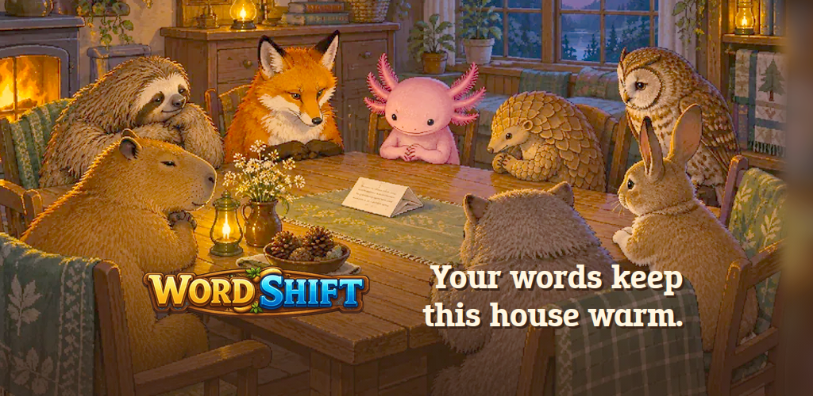
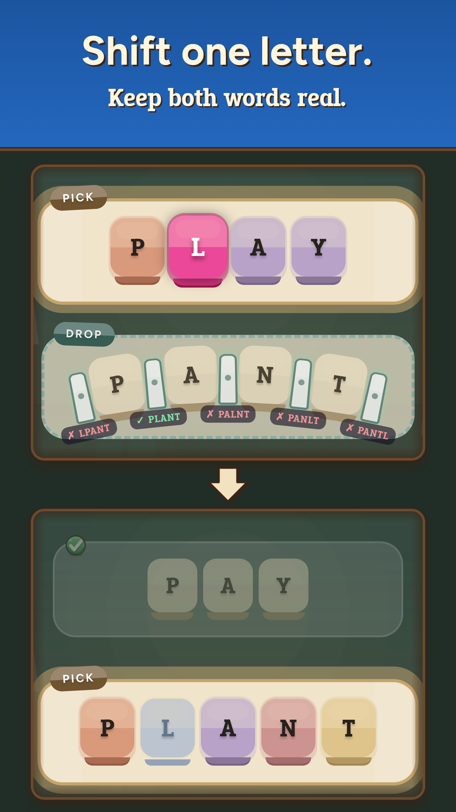
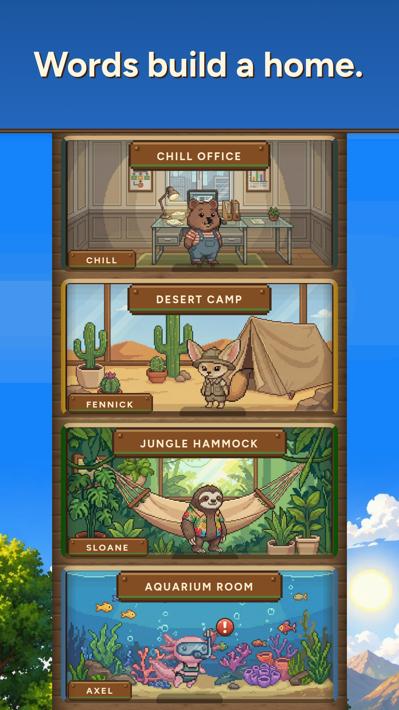
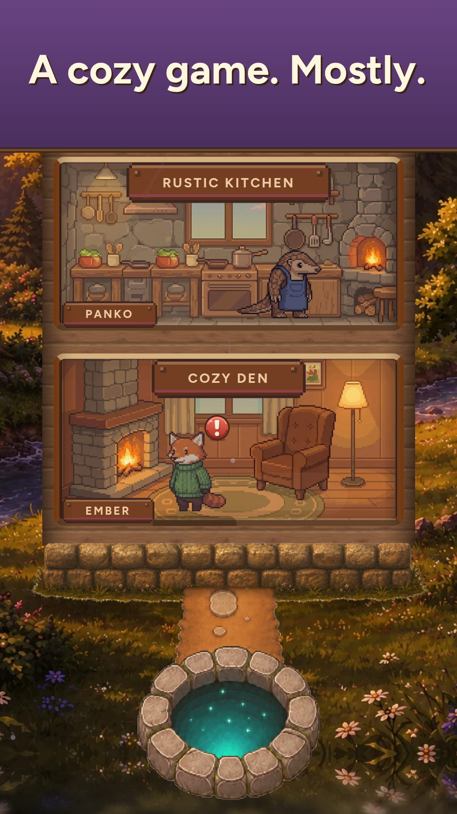
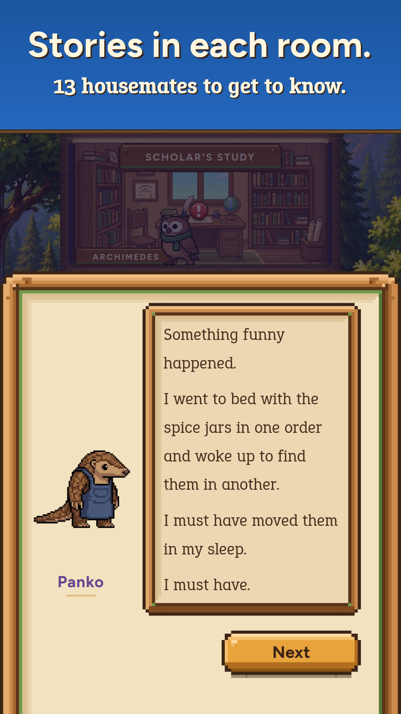
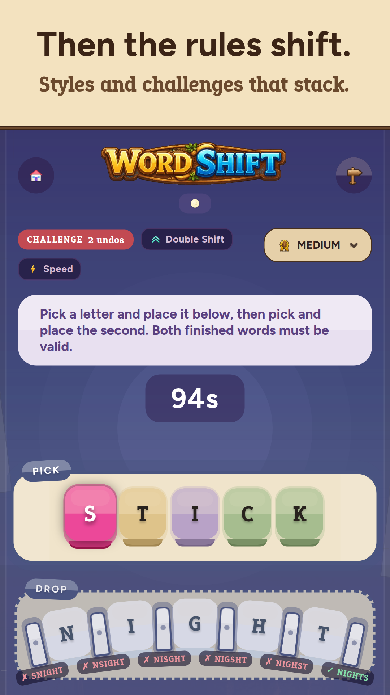
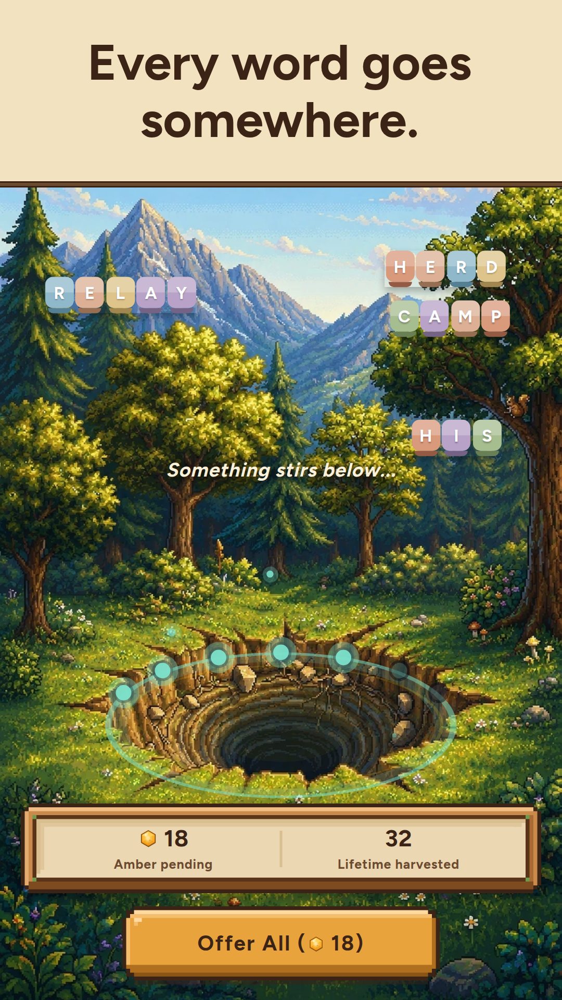
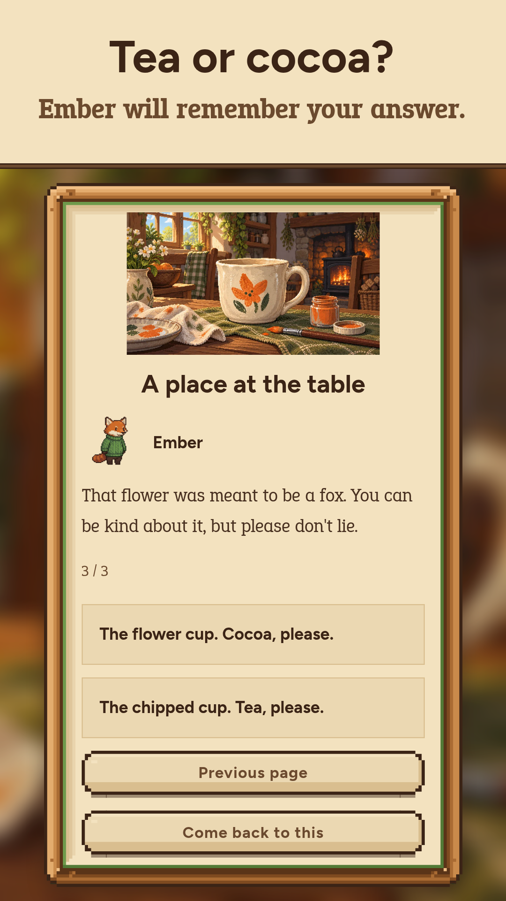
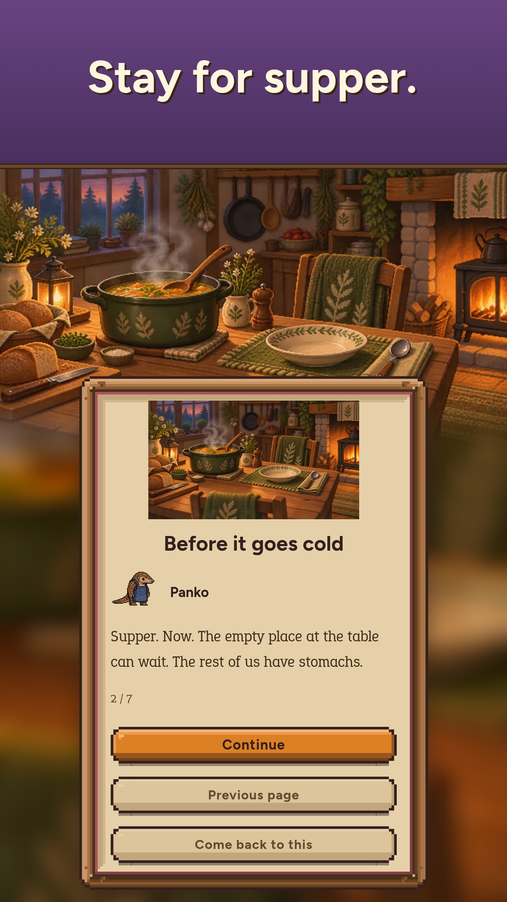
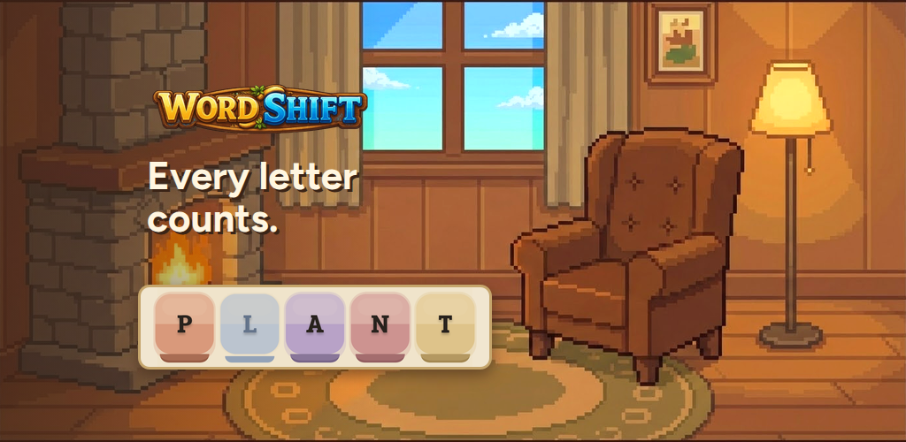

Review page for the refresh-2026-09 campaign. It is not a Play Console page. Upload the files named under each image; copy and alt text come from copy/ and alt-text.tsv.
WordShift: Cozy Word Puzzle
A cozy word puzzle game with 13 animal friends and a house that keeps secrets
Feature graphic

Phone screenshots, gallery size








Phone screenshots, in upload order
01. Shift one letter.upload/phone/01-shift-one-letter.png Alt: Shift one letter. Keep both words real. The L lifts out of PLAY, a check marks PLANT, then the rows read PAY and PLANT02. Words build a home.upload/phone/02-words-build-a-home.png Alt: Words build a home. A pixel-art house on a sunny afternoon: a capybara's office, a fennec's camp, a sloth's hammock, an axolotl's aquarium03. A cozy game. Mostly.upload/phone/03-cozy-mostly.png Alt: A cozy game. Mostly. The house at sunset: Panko in her kitchen, Ember by the fire in the den and a softly glowing well04. Stories in each room.upload/phone/04-stories-in-each-room.png Alt: Stories in each room. Panko the pangolin: "I went to bed with the spice jars in one order and woke up to find them in another."05. Then the rules shift.upload/phone/05-then-the-rules-shift.png Alt: Then the rules shift. A Double Shift puzzle with Challenge and Speed on: a countdown clock, an undo limit and a lifted letter06. Every word goes somewhere.upload/phone/06-every-word-goes-somewhere.png Alt: Every word goes somewhere: words from a solved puzzle float over a hole in a forest clearing. "Something stirs below"07. Tea or cocoa?upload/phone/07-tea-or-cocoa.png Alt: Tea or cocoa? A painted story page with a flower-painted cup: Ember asks you to be kind but honest, and you choose tea or cocoa08. Stay for supper.upload/phone/08-stay-for-supper.png Alt: Stay for supper. A painted supper table set with soup and bread. Panko says the empty place at the table can wait
Tablet screenshots (7-inch and 10-inch)
Upload t1 to t4, in this order, to both the 7-inch and 10-inch slots: 1440x2560 full-frame genuine captures (720x1280 CSS at DPR 2) with no caption, band or added text. The board leads so the first tablet image shows the puzzle. It needs the tablet board fix in this build (getBoardScaleWrapperStyle in src/services/slotEstimation.ts): before it, the enlarged board's row cards ran off both screen edges on 600 dp and wider screens, so upload the tablet set only once a build carrying the fix is live on Play.
T4upload/tablet/t4-pit.png Alt: On a tablet, words from a solved puzzle float over a hole in a sunny forest clearing, with amber waiting to be offered
Preview video
Feature graphic B (experiment only)

Full description
Pick up the L in PLAY. Drop it into PANT. Now you have PAY and PLANT, and a fox by the fire looks very pleased with you.
WordShift is a cozy word puzzle game built on one small move. Take a letter from one word and place it in the next. Both words must stay real. The letter you move locks into the word it joins, so every choice shapes the rest of the chain. If you enjoy word ladders, you'll feel at home here: this word game takes one move to learn, and its chains keep finding fresh ways to make you think.
How it plays
- Move one letter at a time down a chain of words
- Solve the whole chain to earn stars and amber
- Tap a letter to preview the words it would make, or drag it into place
- Use a hint when you want a nudge: you start with five and can earn more
- No energy meters or lives, and no countdown clock unless you want one
A word game that grows with you
- Over 4,000 word puzzles across five difficulty levels, from four-letter warmups to six-letter Expert chains
- Reverse Shift: play down the chain, then carry it back up
- Double Shift: move two letters at every step
- Four modifiers you can layer on any of the three styles: Challenge Mode, Speed Shift, Blind Mode and Lexicon for rarer words
- A daily word puzzle with streaks and your rank among the day's players
- Five daily and five weekly quests, plus 56 achievements
- More styles and modifiers open as you progress
Grow a home, room by room
Every puzzle you solve earns amber. Spend it to build rooms in a pixel-art house and welcome 13 animal housemates, each with a room of their own. Ember the fox keeps the fire going in the Cozy Den. Panko the pangolin runs the kitchen, and anyone who helps eats first. Archimedes the owl reads in his study. Axel the axolotl drifts around his aquarium in a scuba mask. As the house grows, a sloth strings up a jungle hammock, a calm capybara takes the office and a nervous rabbit tends the garden, all the way up to a tarsier who watches the stars and an old kakapo in the rooftop sky garden.
Every resident walks around their own room, talks about their day and picks up the conversation where you left off, with more than 2,000 lines of dialogue to discover. The animals talk about you when you're away. All good things. Probably. Later, you can decorate every room, and each decoration is a gift you hand to the friend who lives there.
Stay for the story
The words you make are gathered at a glowing well below the house, and you offer them there to collect the amber they earned. The story unfolds in illustrated scenes, from a chipped cup of tea to supper by candlelight, and your answers are remembered and come back later. Then small things start to shift. Panko went to bed with her spice jars in one order and woke up to find them in another. Ember's fire has taken up drawing. Some evenings, the conversations sound a little different.
Make it yours
- Tile themes and finishes, confetti and move sparks to buy with amber
- A monthly season pass with a reward track that advances as you solve
- Twelve music tracks that change as the story unfolds
- Settings for sound, music, haptics and reduced motion
Good to know
Core puzzles work offline and no account is needed. Your progress backs up automatically when you're online, with a recovery code to restore it on another device. Share your results with friends. Online features and purchases need an internet connection.
Contains ads and in-app purchases, including an optional auto-renewing Supporter subscription and an optional purchase that removes ads. No purchase is needed to follow the main story. The story develops unsettling themes and mild horror.
A cozy word game. Mostly.
{kind=link}
{kind=link}
{kind=link}
{kind=link}
{kind=link}
{kind=link}
{kind=link}
{kind=link}
{kind=link}
{kind=link}
{kind=link}
{kind=link}
{kind=link}